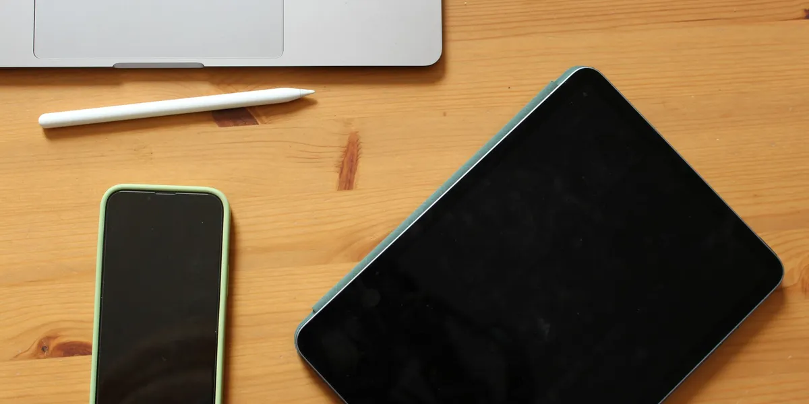
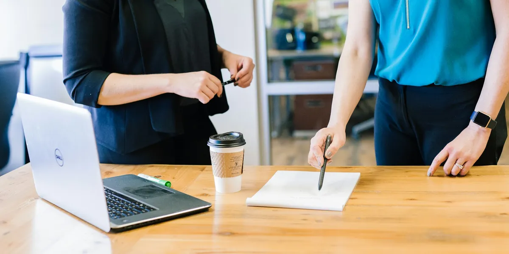

로펌 알엠 법률사무소LAW FIRM RM
사건의 처음부터 끝까지,
대표변호사가 직접 듣고 직접 변론합니다


큰 로펌의 경험을,
가까운 거리에서
직접 수행합니다.
상담부터 변론까지 대표변호사가 맡습니다. 특검 사건 변호와 상장기업 자문으로 쌓은 경험을 개인 의뢰인의 사건에 그대로 씁니다.
- 01
대표변호사가 직접 수행합니다
상담도, 서면도, 법정 변론도 대표변호사가 직접 합니다. 사건을 넘겨받는 사람이 없으니 의뢰인의 말이 중간에 사라지지 않습니다.
- 02
특검 사건으로 다진 형사 대응력
일반 형사 사건은 물론 특검 사건을 다수 변호하며 수사의 흐름을 읽어 왔습니다. 경찰 조사 동석부터 영장심사, 공판까지 초기 대응이 결과를 바꿉니다.
- 03
상장기업 자문 경험으로 설계하는 민사
코스피·코스닥 상장기업 법률자문과 M&A를 다수 수행했습니다. 이기는 것 이상으로, 실제 회수까지 이어지는 전략을 세웁니다.
- 04
방송에서 검증된 법률 해설
MBC 100분토론, TV조선, 채널A, MBN 등 주요 시사 프로그램에서 쟁점 사건을 분석해 왔습니다. 어려운 법률 문제를 쉽게 설명합니다.
상담은 이렇게 진행됩니다
 01
01상담 신청
전화·카카오톡·홈페이지로 신청하면 확인 즉시 상담 일정을 잡습니다.
 02
02변호사 직접 상담
사무장이 아닌 대표변호사가 사건을 처음부터 직접 듣고 방향을 제시합니다.
 03
03수임·진행 보고
수임 후 서면 작성과 출석을 직접 하고, 진행 상황을 단계마다 알려드립니다.
로펌 알엠 법률사무소Reliable & Meticulous — 믿을 수 있고, 꼼꼼하게. 의뢰인이 가장 힘든 순간에 곁에 있는 법률사무소가 되겠다는 뜻을 담았습니다.

형사 · 민사 · 개인회생 · 가사
개인 의뢰인의 법률 문제를 한 곳에서
큰 로펌의 자문 경험과 동네 법률사무소의 가까움을 함께 갖춘 사무소. 성남 위례에서 수도권 전역의 의뢰인을 만나고 있습니다.
알엠 법률 서비스
형사·민사·개인회생·가사. 개인 의뢰인이 마주하는 법률 문제에 대표변호사가 직접 대응합니다.
형사 사건
초기 대응부터 공판까지
경찰·검찰 조사 동석, 영장심사, 공판 변론. 특검 사건 다수 변호 경험으로 수사의 흐름을 읽습니다.
- 경찰·검찰 출석 요구를 받아 조사를 앞둔 분
- 구속영장이 청구되었거나 구속된 가족이 있는 분
- 고소를 당했거나 고소를 준비 중인 분
민사 분쟁
실익 중심의 해결
계약·손해배상·부동산·기업 분쟁. 상장사 자문 경험으로 이기는 것 이상으로 실제 회수를 설계합니다.
- 빌려준 돈이나 계약금을 돌려받지 못한 분
- 소장을 받고 30일 내 답변서를 써야 하는 분
- 임대차 보증금·명도 문제로 다투는 분
개인회생
멈춘 일상을 다시
신청부터 금지명령, 인가, 면책까지. 채무로 멈춘 일상이 다시 움직이도록 절차를 끝까지 관리합니다.

- 매달 갚는 돈이 소득의 절반을 넘는 분
- 추심 전화·압류로 생활이 어려운 분
- 회생 기각 뒤 재신청을 고민하는 분
가사 사건
차분하고 단단하게
이혼·재산분할·양육권·상속. 감정이 얽힌 사건일수록 의뢰인과 자녀의 내일을 먼저 생각합니다.

- 이혼과 재산분할·양육권을 함께 정리해야 하는 분
- 배우자의 부정행위로 위자료를 청구하려는 분
- 상속재산분할·유류분 분쟁이 생긴 분
기업 법률자문
로펌 알엠 법률사무소가 법률자문을 맡고 있는 기업과 단체입니다.
- 주식회사 동후디앤씨
- 주식회사 미디어솔루션
- 주식회사 세오
- 주식회사 테라
- 주식회사 우성크라이어텍
- 이디씨라이프 주식회사
- 원광운수 주식회사
- 합자회사 합동운수
- 성남중앙지하상가상인회
- 블랙다이아몬드커머디티스 유한회사
- 아슨코리아 유한회사
- 주식회사 푸른공조
- 주식회사 에스오에스
- 주식회사 선진메디칼
- 주식회사 삼일종합건설
- 주식회사 두손씨에스티
사건사례
로펌 알엠 법률사무소이 수행한 주요 업무사례
의뢰인 이야기
직접 상담하고 진행한 분들의 말 (예시 문구)
경찰 출석 전날 밤에 전화했는데, 다음 날 아침 동석해 주셨어요
조사실에서 변호사님이 옆에 계셔서 떨리지 않았습니다. 결과도 혐의없음이었어요.

보증금을 못 받고 1년을 끌었는데 전액 돌려받았습니다
판결만이 아니라 실제로 돈이 들어올 때까지 챙겨주신 게 가장 고마웠습니다.

월 변제금이 48만 원으로 정해지고 추심 전화가 끊겼어요
1차 기각 뒤 포기하려 했는데, 보정으로 다시 개시 결정을 받았습니다.
아이 문제를 먼저 물어봐 주신 변호사님이었습니다
재산분할 60%를 인정받았지만, 양육 환경을 같이 정리해 주신 게 더 컸어요.
방송·미디어


상담 문의
원하는 상담 방법을 선택하시면 대표변호사가 직접 확인하고 연락드립니다